About
During my tenure I created interactive components by designing and building modules. Tested and prototyped components. Participated in Agile scrum design and technical sprints, used JIRA to communicate with engineers. Developed prototypes in Figma and HTML/CSS/JS to communicate functionality and logic with site engineers. Tested for bugs in QA. Led design direction on the global navigation redesign, by designing, researching and testing components and user experience. Communicated with teams for design and user experience needs in research and engineering problems related site-wide navigational issues, usability, and accessibility standards. Developed design solutions for various problems and contributed to QA testing for various pages, and experiences.
Role: Concept, Ideation, QA,
Design Tools: Figma, Sketch
Technologies: Chrome Tools, HTML/CSS, jQuery, JIRA
PayPal
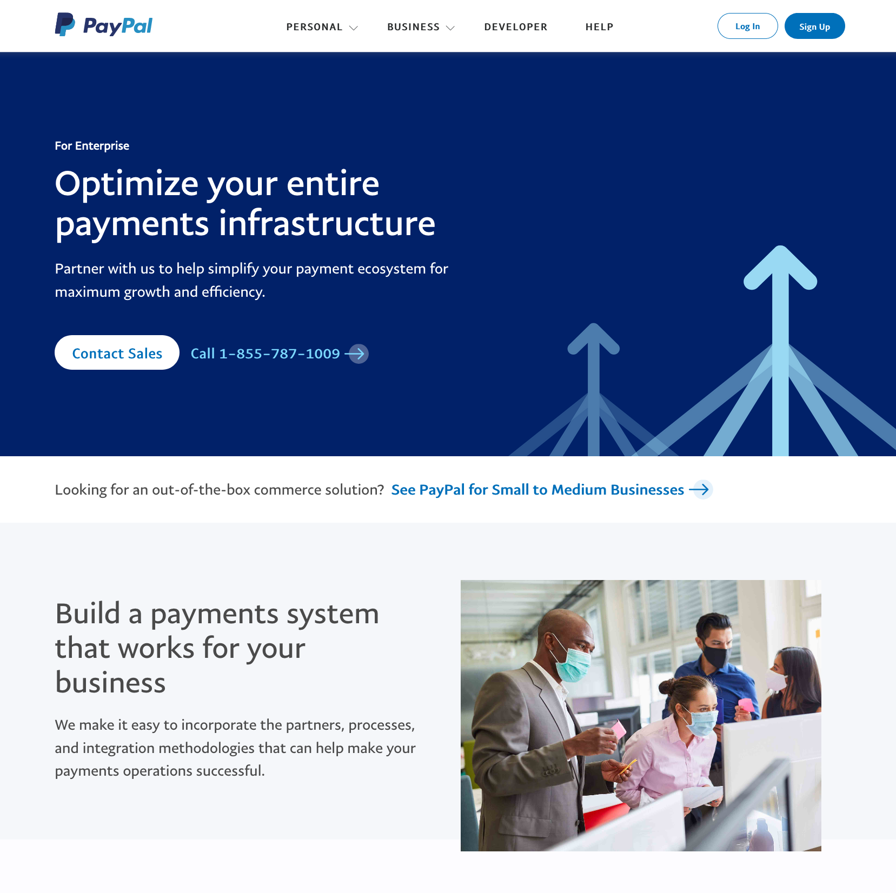 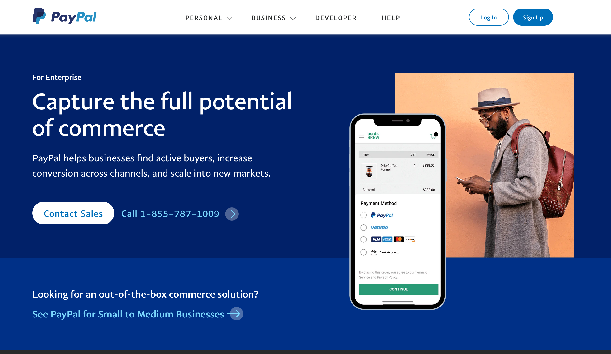 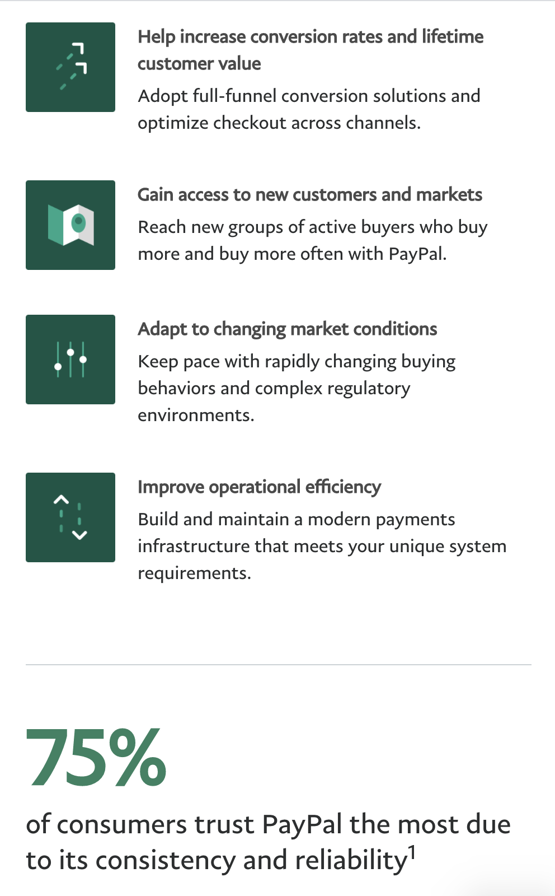
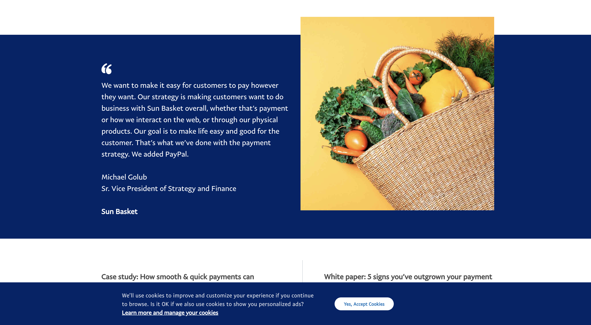
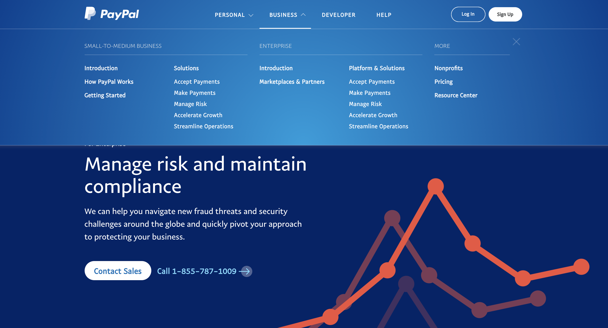
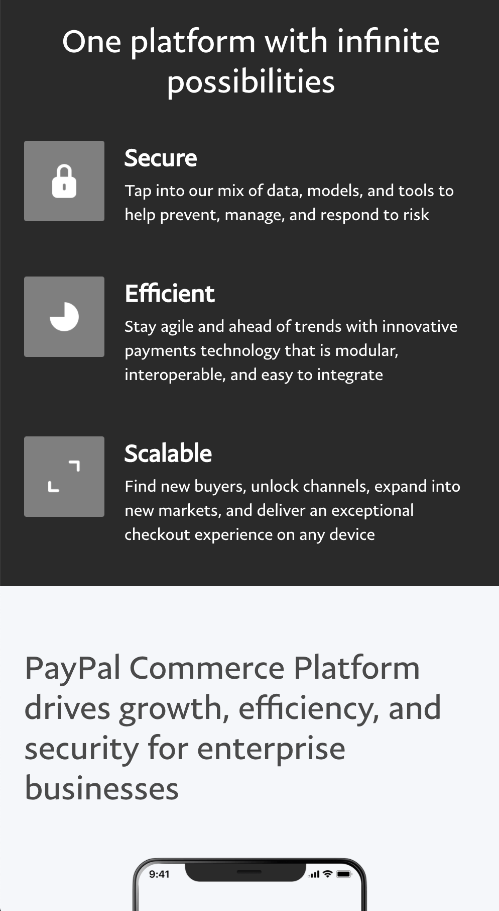
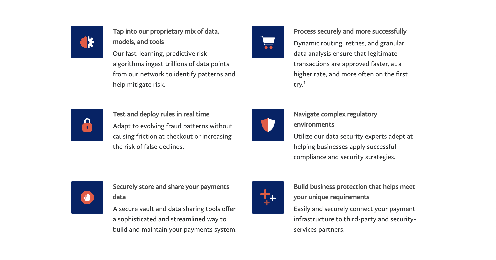
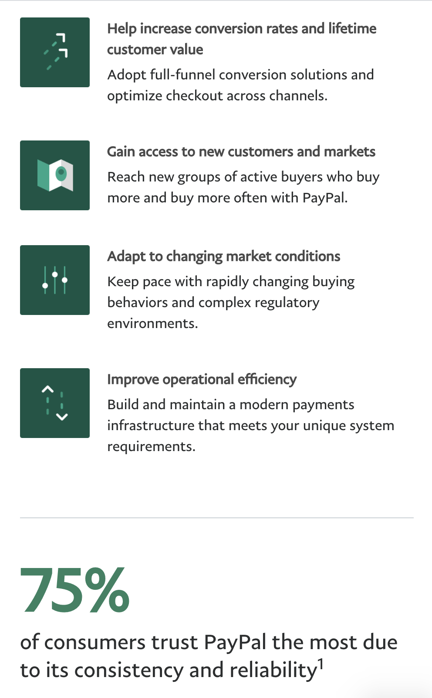
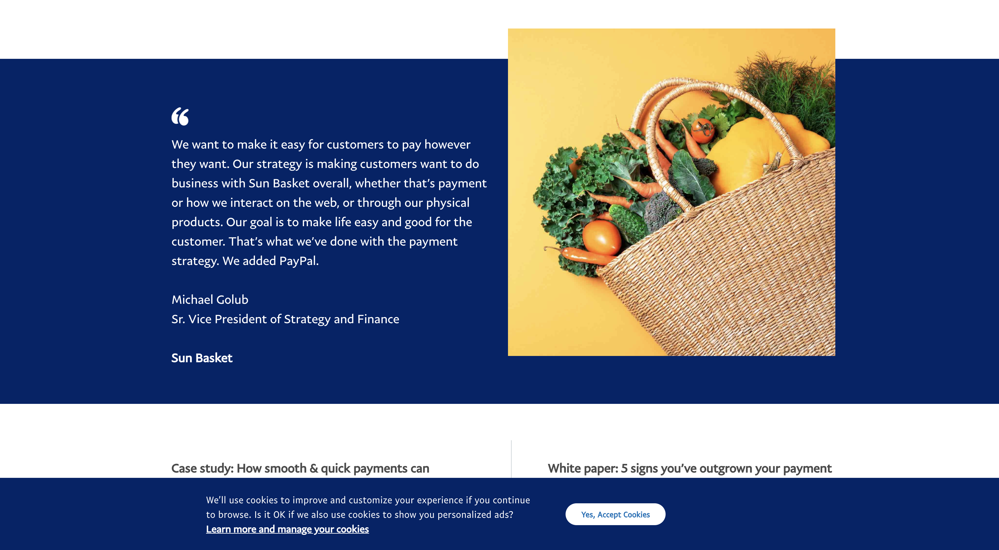
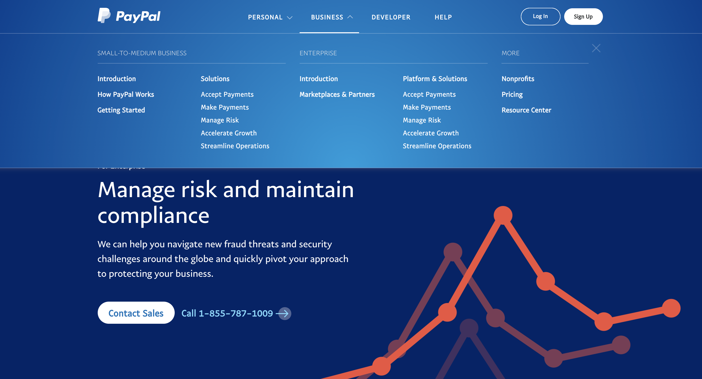
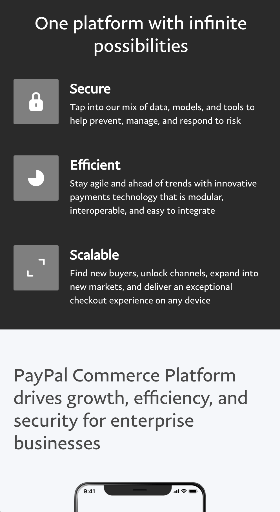
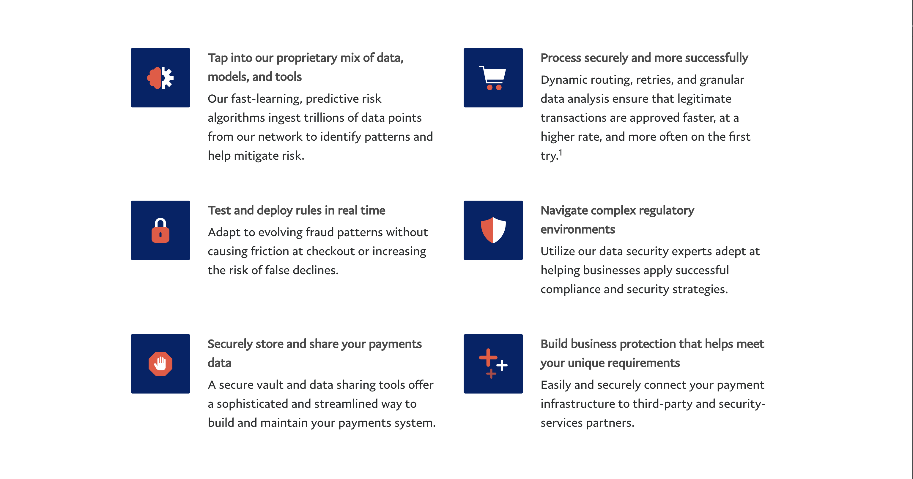